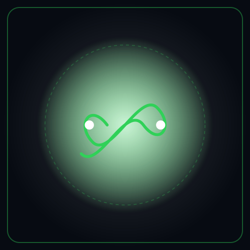

CIRCULAR-CORE: OUROBOROS
Metabolismo Material, Catálogo LER/EWC, Espectrometría NIR & Descarbonización Scope 1-2-3 (CSRD)
Gemelo digital paramétrico de Caja Gris para la gobernanza de economía circular, contabilidad gravimétrica de residuos y reporte corporativo auditado. Acopla análisis de flujo de materiales (MFA ISO 59020), clasificación ministerial LER/MITECO (HP1–HP15), triaje óptico espectral NIR SAM y red neuronal dual PyTorch (AnomalyNet + PINN-TCN) blindada con doble cápsula de ADN regulatorio y físico (ASTRAEA y ATHENA). Erradica sobrecostes de hasta un 800% por sobre-segregación y automatiza el cumplimiento fiscal de la Ley 7/2022.

Propósito Operativo & Resolución Práctica
Trazabilidad gravimétrica LER, triaje espectral NIR, exención fiscal Ley 7/2022 y descarbonización Scope 3
En hospitales e industrias se mezclan residuos asimilables (toallas de baño LER 20 03 01) en bolsas rojas de biocontaminados (LER 18 01 03*), disparando hasta un 800% la factura de incineración a 1.200 °C y arriesgando sanciones por no desviar residuos de vertedero.
Acopla pesaje digital continuo (EN 45501 ≤0.5%), espectrometría óptica NIR SAM (900–1750 nm) y redes neuronales PyTorch (PINN-TCN + AnomalyNet) para certificar tasas de valorización superiores al 70% y abatir un 70.4% de emisiones en Alcance 3.
Auditado sobre 6 protocolos de calibración: Protocolo ALPHA (3.501 kg, 23 unidades, 25 meses), Quirúrgico BETA (Decreto 83/1999), RCD Obras Civiles (89.7% valorización), Envases (RD 1055/2022), Granza HDPE EoW y Compost LIFE-BIOBEST Clase A.
134 normas auditadas en Bóveda Criptográfica: Ley 7/2022, RD 1055/2022, RD 764/2026 MITECO, Directiva CSRD (ESRS E1 y E5), ISO 59020:2024, ISO 14064-1:2019 e ISO/IEC 42001 (EU AI Act Art. 14/15).
COCKPIT C6ISR INTERACTIVO EN VIVO
STREAMLIT CLOUD · EN LÍNEA [LIVE]Análisis de Flujos de Masa (MFA) & Dulong-Boie
El motor determinista modela la conservación gravimétrica estricta (ISO 59020 / EN 45501 Clase III):
Impide discrepancias de masa (Δm ≠ 0) y ajusta la humedad real de cada fracción para liquidar con precisión el impuesto de vertedero (40 €/t) y de incineración (15 €/t) bajo la Ley 7/2022.
Espectrometría NIR SAM & End-of-Waste
Mapeo espectral en 22 longitudes de onda del infrarrojo cercano (900–1750 nm) con clasificador Spectral Angle Mapper (SAM):
Asegura la certificación de Fin de Condición de Residuo (EoW) bajo la Orden Ministerial BOE-A-2026-21300 y desbloquea la exención del impuesto al plástico virgen (0,45 €/kg).
Red Neuronal Dual PyTorch & Doble ADN
Arquitectura desacoplada en dos redes complementarias (200.984 parámetros) protegidas por disyuntores físicos:
- OuroborosAnomalyNet (1.964 p, 0.40 ms): Autoencoder no supervisado que aísla purgas anómalas de almacén vía error de reconstrucción MSE (P85).
- OuroborosCircularForecaster (199.020 p, 3.87 ms): WaveNet TCN causal con BiGRU y Cross-Attention para proyecciones probabilísticas P10-P50-P90 sin cruce de cuantiles.
Disyuntor anti-alucinación: clampa masas negativas (m < 0), intensidades < 0.80 kg CO2e/kg o créditos irreales > -1.50 kg CO2e/kg con sellado SHA-256 (ISO/IEC 27037).
Edición Comunitaria (Open-Core) vs. Edición Enterprise (CSRD, eSIR & Fiscalidad Verde)
Ecosistema modular de ciencia abierta con pesos neuronales PyTorch, matrices estequiométricas y bóveda normativa, junto a telemetría RFID 24/7 y pasaporte digital ministerial.
Investigación, Balances MFA & Descarbonización Scope 1-2-3
Diseñada para auditores ambientales, consultores de sostenibilidad, investigadores universitarios y jefes de planta que requieren validar inventarios de ciclo de vida (ISO 59020, ISO 14040/44 e ISO 14064-1).
- Catálogo LER/EWC Vectorizado: Clasificación ministerial de residuos (HP1–HP15) y factores estequiométricos de carbono en Python.
- Modelos Neuronales PyTorch: OuroborosAnomalyNet (1.9k params) y OuroborosCircularForecaster (199k params) con pesos abiertos.
- Doble Armadura de ADN: 134 normas regulatorias (ASTRAEA) y 4 invariantes físicos (ATHENA) con hash SHA-256 verificado.
- Sin pesaje continuo en básculas IoT, sin integración telemática e-SIR y sin auditoría tributaria en tiempo real.
Pesaje RFID 24/7, Integración e-SIR & Optimización Fiscal
Desplegada para direcciones de compras, jefaturas de sostenibilidad corporativa y complejos hospitalarios obligados a reportar bajo la Directiva CSRD y la Ley 7/2022.
- Pesos TITAN Industriales (NVIDIA L4): OuroborosDeepLatentAE (276k params) y OuroborosDeepPINNForecaster (1.51M params, 7 cuantiles).
- Interoperabilidad Ministerial e-SIR (MITECO RD 764/2026): Generación telemática de esquemas E3L v3.0, validación de 10 dígitos NIMA y control biunívoco LER→R/D.
- Motor Fiscal Ley 7/2022 & SCRAP: Liquidación automática de canon de vertedero (40 €/t), canon de incineración (15 €/t) e impuesto al plástico no reutilizable (0,45 €/kg).
- Reportes Oficiales CSRD (ESRS E1 & E5): Tablas de aseguramiento limitado para auditorías Big 4 con sellado criptográfico ISO/IEC 27037.